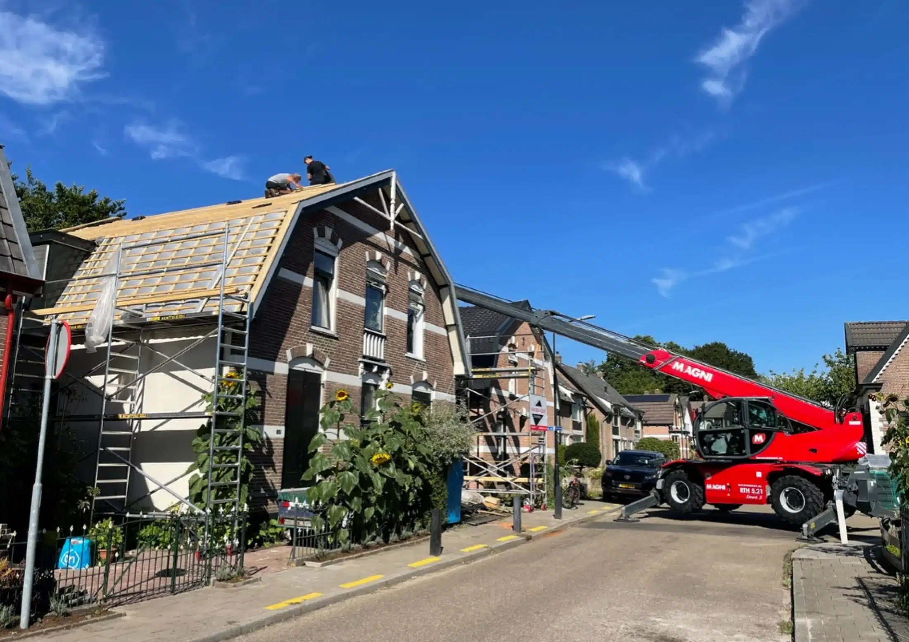
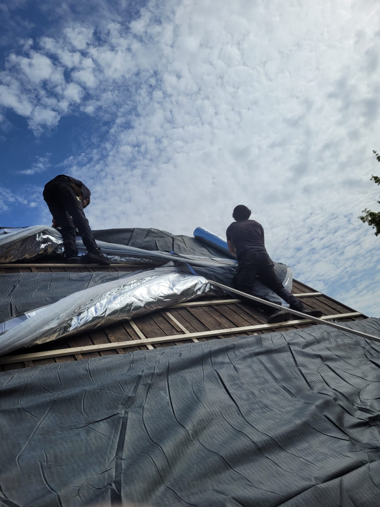
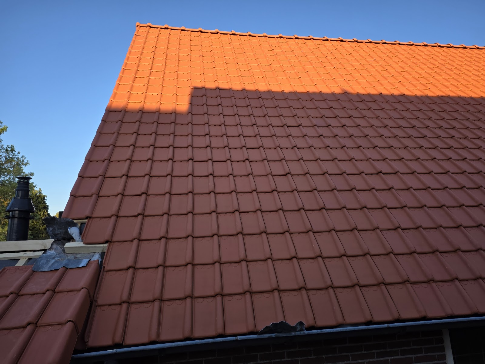
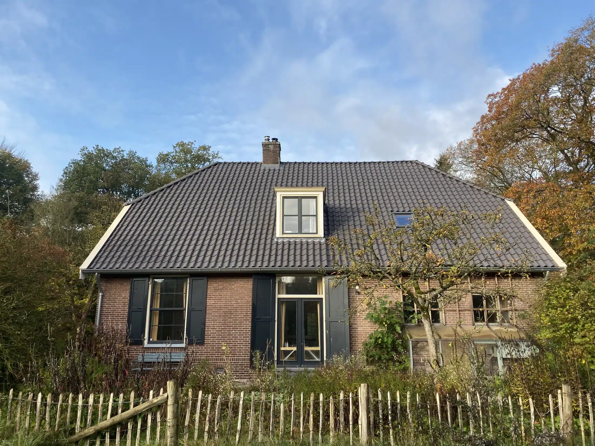
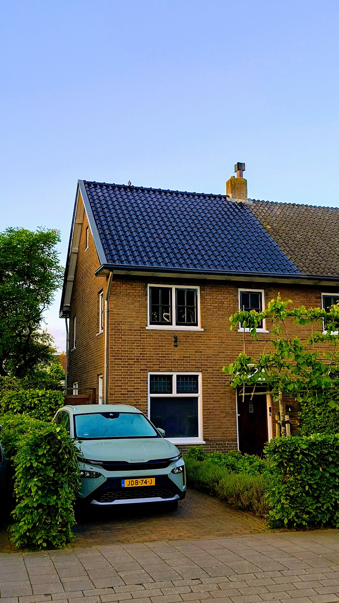
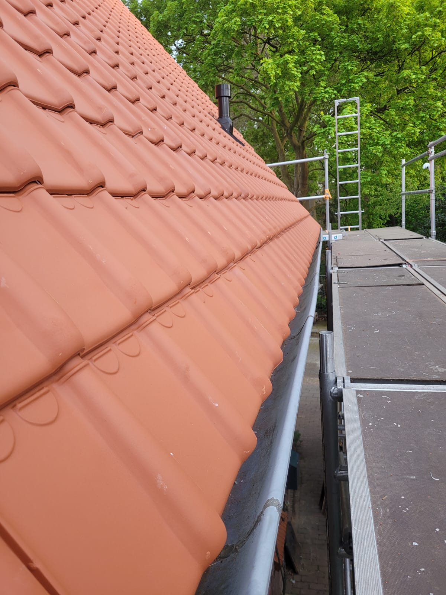
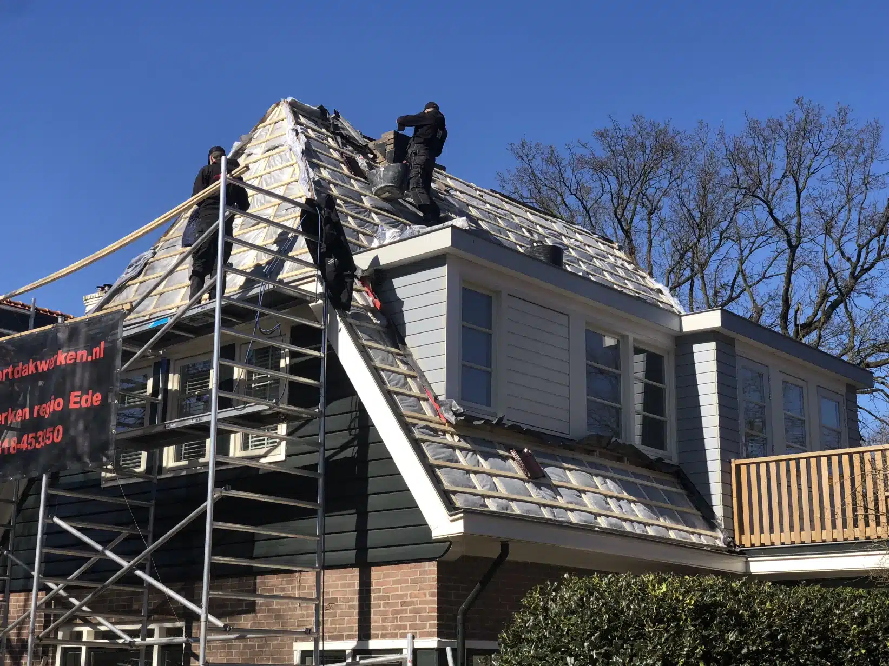
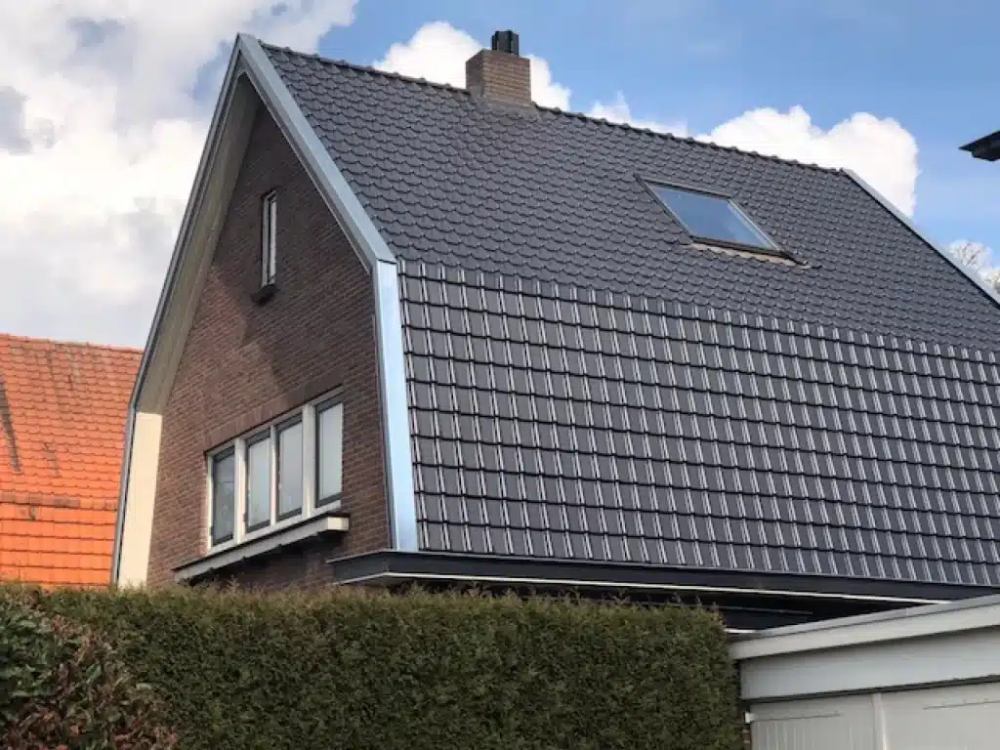
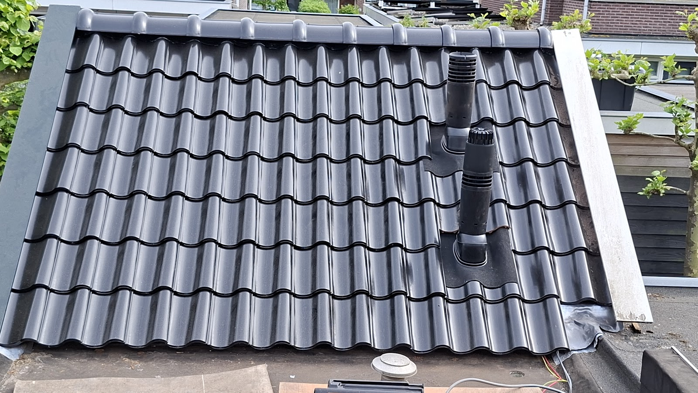

Dakdekker in Ede
Een dak waar u niet meer naar omkijkt.
Cees van der Voort en zijn vaste ploeg renoveren, isoleren en repareren pannendaken in Ede en omgeving. Eerst het hele dak bekijken, dan een eerlijk advies.
4,8 uit 33 reviews op Google en Homeproved

Ziet u een natte plek? Wacht niet af.
"Zodra je de verf van het hout ziet bladderen, onderneem direct actie. Want als je al een druppel water binnen ziet, is het probleem al vergevorderd."
Een lekkage begint zelden bij de pannen zelf. Vaak zit het in een losse nokvorst of in het loodwerk rond de schoorsteen. Wij zoeken eerst de bron en herstellen die, geen losse pleisters.
Bel direct: 0318 453 350Maandag tot en met vrijdag van 08:00 tot 17:00
Alles aan uw pannendak.
Al ruim 30 jaar renoveren en isoleren wij pannendaken in Ede, Veenendaal, Wageningen, Arnhem en omgeving. Met eigen vakmensen en vaste aanspreekpunten.

-
Dakrenovatie
Uw pannendak weer als nieuw. We inspecteren al het dak- en zinkwerk, inclusief houtwerk en dakomlijsting, en vervangen wat nodig is. Van nieuwe pannen en panlatten tot de afwerking.
-
Dakisolatie
Goede isolatie maakt uw huis comfortabeler en zuiniger. We kijken welke oplossing bij uw dak past en isoleren het liefst op het moment dat het dak toch open ligt.
-
Daklekkage en dakreparatie
Een losse pan, een gescheurde nokvorst of stormschade. We sporen de oorzaak op en repareren snel en vakkundig, van één dakpan tot een heel dakvlak. Stormschade leggen we met foto's vast.
-
Nokvorsten
Losse nokvorsten zijn een klassieke oorzaak van lekkage. Wij zetten ze vast met flexibele, stormvaste dakmortel die niet scheurt zoals oud cement, inclusief vogelschroot.
-
Schoorsteen en loodwerk
Een schoorsteen renoveren met nieuw loodwerk, of netjes verwijderen en het dak waterdicht dichtmaken. Opruimen en afvoeren van het puin hoort erbij.
-
Dakgoten
Lekkende goten vervangen we door nieuwe, met zink beklede dakgoten die tientallen jaren meegaan. Bij elke inspectie kijken we de goten sowieso na.
-
Dakkapellen en Velux
Bestaande dakkapellen repareren of nieuwe plaatsen, en Velux dakramen monteren met een nette afwerking aan de binnenkant.

Ligt het dak open? Dan pakken we het in één keer goed aan.
Een nokvorst die los zit, uitgedroogd loodwerk, een schoorsteen die alleen nog lekkage geeft. Als de steiger toch staat, is dat het moment om het mee te nemen.
Dat scheelt u een tweede keer steigers, een tweede keer overlast en een tweede rekening. Daarom inspecteren wij altijd het complete dak voordat we beginnen, van houtwerk tot zinkwerk.
Repareren of renoveren?
Niet elke reparatie is verstandig. Bij een woning aan de Arnhemseweg in Otterlo was binnen nog niets te zien, terwijl de pannen buiten al jaren eerder vervangen hadden moeten worden. Wij vertellen u eerlijk of uw dak nog jaren mee kan, of dat renoveren per saldo goedkoper is. Geen verkooppraatje.
Daken bij u in de buurt.
Van jaren 30 woningen tot vooroorlogse villa's en boerderijen. Een greep uit ons werk in de regio.






We werkten onder meer in Ede, Bennekom, Wageningen, Veenendaal, Renkum, Oosterbeek, Rhenen, Amerongen, Otterlo, Lunteren, Wolfheze, Voorthuizen, Apeldoorn en Arnhem. Staat uw plaats er niet bij? Bel gerust, we kijken graag of het uitkomt.
Wat klanten over Cees en zijn ploeg zeggen.
4,8 uit 33 reviews op Google en Homeproved
"Cees en zijn mannen hebben een nieuw dak op zowel ons huis als onze schuur gemaakt. Ze hebben ook meteen de daken goed geïsoleerd. Het dak was 100 jaar oud en echt aan vervanging toe. Cees heeft in het verleden al meerdere verbouwingen voor ons uitgevoerd dus we wisten al dat hij betrouwbaar en secuur is en ook nog eens heel sympathiek. Ook deze samenwerking verliep weer super, met goede afstemming vooraf, tijdens en na de werkzaamheden. De mannen houden de vaart erin tijdens het werk en werken netjes en precies. Daardoor is de overlast minimaal. We hebben de nieuwe daken nu een paar maanden en hebben gemerkt dat het klimaat in huis veel aangenamer is geworden. We zijn er heel blij mee!"
"Wij hebben het dak van ons huis en onze schuur laten renoveren door Cees en zijn ploeg. De jongens werken netjes en secuur en we zijn ontzettend tevreden over het resultaat. Het dak is geisoleerd en ligt er weer netjes bij. Ik kan van der Voort Dakwerken van harte aanbevelen."
"We hebben na deskundig advies onze dakpannen laten vervangen door dakwerken van der Voort. Dit is op professionele wijze gedaan tot volle tevredenheid."
"Na best veel gedoe te hebben gehad de afgelopen jaren met diverse aannemers, nu extra goed onderzoek gedaan wie we wilden vragen voor de klus aan ons dak. Het ging om nieuwe pannen en latten, aanpassen boeiborden, inpakken dak met isolatiedoek, vullen van holle ruimtes met muurisolatie, nieuwe dakramen installeren en oude ophogen, installatie rolluiken en de kozijnafwerking binnen. Uiteindelijk heeft het team van Cees o.l.v. Jan Willem bij ons het dak aangepakt. We hebben geen moment spijt gehad van deze keuze. Zijn team bestaat uit 100% vakmensen. Rustige jongens die heel hard werken. Iedere ochtend stipt op tijd aanwezig en heel fijn in de communicatie. Geen onduidelijkheden, goed overleg en proactief meedenken waar nodig. Van het moment van steigeropbouw tot het wegrijden van het laatste afval, alles was goed verzorgd en netjes. En het resultaat mag er zijn. Enorm blij met de gemaakte keuze voor dit bedrijf."
Even laten kijken naar uw dak?
Bel ons of laat uw nummer achter. Een offerte is vrijblijvend en we reageren binnen één werkdag. Elk dak is anders, dus een eerlijk bedrag noemen we pas na een inspectie.
- Telefoon
- 0318 453 350
- info@vandervoortdakwerken.nl
- Adres
- Sportlaan 32
6717 LB Ede - Bereikbaar
- Maandag tot en met vrijdag
08:00 tot 17:00